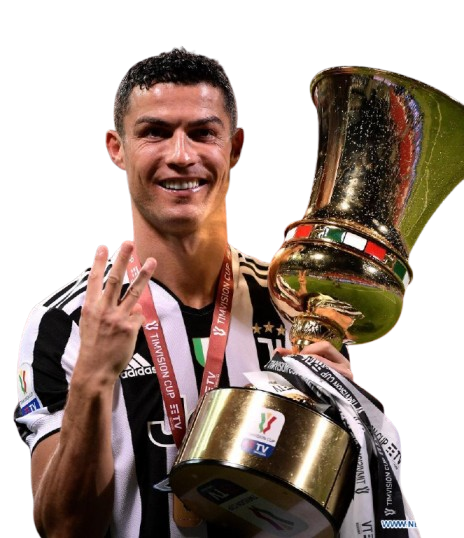

Ronaldo brought his winning mentality to Italy, proving his dominance in a third top European league. His time at Juventus was marked by incredible goal-scoring efficiency and domestic success, adding five major trophies to the Bianconeri cabinet.